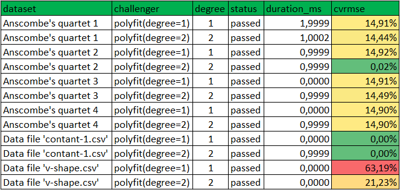
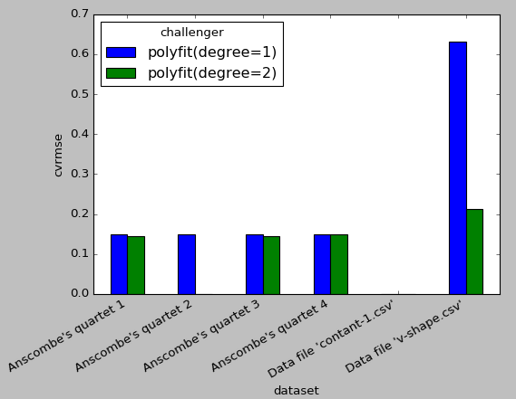
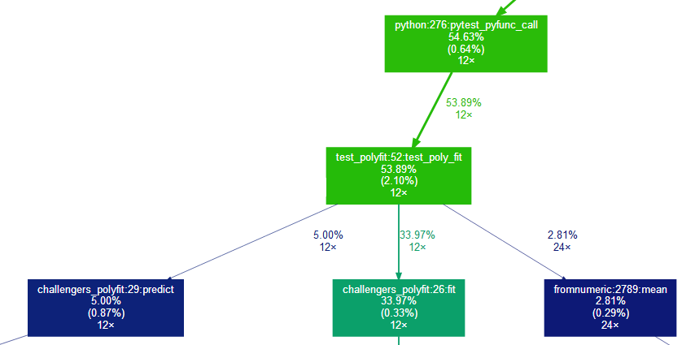
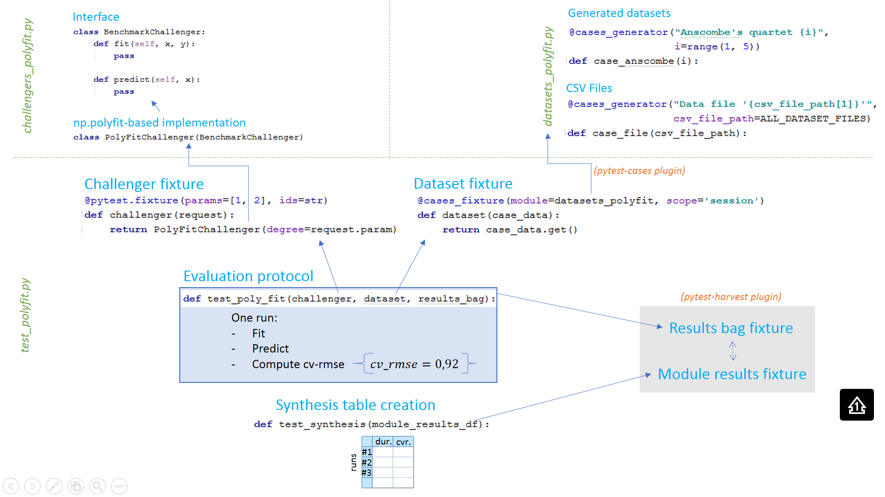

Data science benchmark example¶

Motivation¶
a- Research¶
Most experimental data science papers nowadays include results tables at the end of the paper, where typically there is one entry per dataset per configuration to try (parameters). To produce these tables, we collectively spend a significant amount of coding and debugging time that could be devoted to more interesting matters (such as focusing on improving the core algorithms).
b- Industry¶
A frequent need for teams industrializing data science software bricks is to be able to test them against a large quantity of datasets, in other words to create a reference benchmark. Teams might have two objectives in mind:
- getting an overview of the performance of a single algorithm on a large quantity of cases, so as to be sure of its genericity
- comparing several algorithms or several configurations, to see which one is the best overall and on specific cases.
What is missing today ?¶
It is obviously quite trivial to start developing a benchmark engine: a couple for loops can do the trick. However as soon as one wishes to
- run each evaluation in an independent context (possibly distributed on several processors/platforms)
-
and for each evaluation, get an independent capability to:
- Log (see what has been done)
- Debug (understand why it does not work as expected)
- Profile (understand what takes time to potentially improve speed)
Then one finds out that it is a bit more complex to develop. And by taking a step back we find that pytest and its ecosystem (pytest-profile, pytest-logging, pytest-xdist...) already provide all of this (plus a nice integration in your IDE) !
Example description¶
In this simple example we will benchmark the np.polyfit function, that fits polynomial functions. Our benchmark activity is described by three axis of variability: challengers (this encompasses both variability in algorithms and parameters), datasets, and evaluation protocol.
You can download all the python scripts from this example here.
a- Challengers¶
The polyfit function has a degree parameter allowing to restrict the polynomial order of the function. We will compare two configurations:
- degree = 1 (linear regression)
- degree = 2 (quadratic).
b- Datasets¶
We both want to test the algorithm against:
- datasets generated from python code (in this example we will generate the famous Anscombe's quartet)
- datasets provided as csv files
In real world applications it makes sense to use code to generate edge/challenging cases while continuing to use data files to represent "typical" datasets (real-world data).
c- Evaluation protocol¶
Our evaluation protocol will be very basic:
- fit a model to the data,
- apply the model to the same dataset to get predictions
- compute accuracy using the CV-RMSE metric
Summary¶
To sum-up, we would like to execute all experiments described in the following plots (one plot per dataset):

Note: these plots have been generated with the "advanced" data science benchmark example.
Executing the example¶
a- Requirements¶
The files required to run this example are located in the data_science_benchmark/ folder, available here.
To use this code you have to install pytest, as well as two dependencies:
- pytest-cases to separate test code (the evaluation protocol) from test data (the datasets)
- pytest-harvest to collect applicative results from all runs and create the final synthesis table
>>> pip install pytest-cases >>> pip install pytest-harvest
This example also requires numpy (for the polyfit method) and pandas (for synthesis table creation).
>>> [conda/pip] install pandas numpy
b- First run¶
Go in the example's folder and execute pytest, either from your favorite IDE or using a commandline:
>>> pytest data_science_benchmark/ -v
You should see 13 test executions:
============================= test session starts ============================= ... collected 13 items test_polyfit.py::test_poly_fit[polyfit(degree=1)-Anscombe's quartet 1] PASSED test_polyfit.py::test_poly_fit[polyfit(degree=2)-Anscombe's quartet 1] PASSED test_polyfit.py::test_poly_fit[polyfit(degree=1)-Anscombe's quartet 2] PASSED test_polyfit.py::test_poly_fit[polyfit(degree=2)-Anscombe's quartet 2] PASSED test_polyfit.py::test_poly_fit[polyfit(degree=1)-Anscombe's quartet 3] PASSED test_polyfit.py::test_poly_fit[polyfit(degree=2)-Anscombe's quartet 3] PASSED test_polyfit.py::test_poly_fit[polyfit(degree=1)-Anscombe's quartet 4] PASSED test_polyfit.py::test_poly_fit[polyfit(degree=2)-Anscombe's quartet 4] PASSED test_polyfit.py::test_poly_fit[polyfit(degree=1)-Data file 'contant-1.csv'] PASSED test_polyfit.py::test_poly_fit[polyfit(degree=2)-Data file 'contant-1.csv'] PASSED test_polyfit.py::test_poly_fit[polyfit(degree=1)-Data file 'v-shape.csv'] PASSED test_polyfit.py::test_poly_fit[polyfit(degree=2)-Data file 'v-shape.csv'] PASSED test_polyfit.py::test_synthesis PASSED ========================== 13 passed in 0.67 seconds ==========================
You should also see a new file created: polyfit_bench_results.csv. This file contains the benchmark results table.
c- Optional: summary plot¶
If you install matplotlib, you will also see some synthesis plots:

Note that the tests will end when you close the figure. See matplotlib documentation for details.
d- Optional: tabulate¶
If you install tabulate and enable the -s flag you will be able to see the table nicely printed in your console too:
>>> pip install tabulate >>> pytest data_science_benchmark/ -v -s
e- Optional: pytest filtering¶
Since pytest is the engine used behind the scenes, there are a number of things you can do directly. For example you can run only a subset of all cases by using your IDE integration, or by using pytest commandline filters or markers. For example
>>> pytest data_science_benchmark/ -v -k "test_poly_fit[polyfit(degree=2)-Ansc"
Will only run the 4 following cases:
============================= test session starts ============================= ... collected 13 items test_polyfit.py::test_poly_fit[polyfit(degree=2)-Anscombe's quartet 1] PASSED test_polyfit.py::test_poly_fit[polyfit(degree=2)-Anscombe's quartet 2] PASSED test_polyfit.py::test_poly_fit[polyfit(degree=2)-Anscombe's quartet 3] PASSED test_polyfit.py::test_poly_fit[polyfit(degree=2)-Anscombe's quartet 4] PASSED ===== 9 tests deselected by '-ktest_poly_fit[polyfit(degree=2)-Anscombe' ====== =================== 4 passed, 9 deselected in 0.66 seconds ====================
This might be particularly interesting to debug particular cases, or to perform profiling on only a subset (see below).
f- Optional: pytest profiling¶
Since pytest is the engine used behind the scenes, there are a number of plugins available! This one is a good example. Simply install pytest-profiling and execute the benchmark with the --profile-svg flag. Here we use a filter to focus on the "evaluation" nodes and skip the synthesis code that is less interesting to profile.
>>> pytest data_science_benchmark/ -v -k "test_poly_fit" --profile-svg
The extract of the generated prof/combined.svg file below shows that this can be a great help to understand where the challengers take time.

Here 53% of the total python execution time is spent inside the evaluation protocol test_poly_fit. The rest of the time is probably spent in pytest setup and teardown (including setup and teardown of our challenger and dataset fixtures). These 53% can be decomposed in
- 34% for the fit method
- 5% for the predict method
- 2.81% for the cvrmse calculation, where most time is spent in the
np.meanmethod (called twice per run).
Note that pytest-profiling requires graphviz to be installed on your machine. You can install it using conda install if your python distribution is anaconda.
Windows + anaconda users
If you are in this configuration, you might find that the svg file is not generated even though no particular error is encountered. This is a known bug in pytest-profiling with already a proposed solution. Until they integrate the fix, you may wish to clone the proposed Pull Request branch on your local environment.
Pycharm + anaconda users
If you are in this configuration and installed graphviz using conda, PyCharm might forget to add it to the system PATH. You have to do it manually. This is a known issue in PyCharm.
g- Optional: pytest logging¶
TODO explain how to use pytest-logger to generate one log file per test node.
Code details¶
Our solution is made of three files:
test_polyfit.pycontains the benchmark logic: the evaluation protocol and the synthesis table creationchallengers_polyfit.pycontains the code to create the challengers: the two variants ofnp.polyfitwith degree=1 and degree=2datasets_polyfit.pycontains the code to generate or parse (from csv files) the benchmark datasets

a- Evaluation protocol¶
The first thing to do when creating a benchmark is to create the function that will evaluate each node (i.e. that will correspond to a single row in the results table). For this we create a pytest test function, that is, a function whose name starts with test_. Note: the file name should also start with test_, that's a requirement from pytest.
def test_poly_fit(challenger, dataset, results_bag): # Get the test case at hand x, y = dataset # Fit the model challenger.fit(x, y) # Use the model to perform predictions predictions = challenger.predict(x) # Evaluate the prediction error cvrmse = np.sqrt(np.mean((predictions-y)**2)) / np.mean(y) results_bag.cvrmse = cvrmse
Now we need to tell pytest how to generate the three inputs:
- we need to collect and inject the
challengerobjects, that should implement both afitandpredictmethod - we need to collect and inject the
datasetobjects, that should be tuples(x, y) - we need to collect and inject the
results_bagobjects, where we store our cv-rmse metric.
We will perform all of this by relying on the same mechanism: pytest "fixtures". However that would require a significant amount of code so we rely on plugins to help us on the way.
b- Challengers¶
We create a challenger fixture, with a single parameter containing the degree to use in np.polyfit:
@pytest.fixture(params=[1, 2], ids="polyfit(degree={})".format) def challenger(request): return PolyFitChallenger(degree=request.param)
In order to separate the challenger implementation code from the evaluation protocol, our PolyFitChallenger class is located in challengers_polyfit.py. It is made of two classes:
- Interface -
BenchmarkChallengeris the interface that all challengers should implement to enter the benchmark. Here we define that challengers should implement two methods :fitandpredict.
class BenchmarkChallenger(object): def fit(self, x, y): pass def predict(self, x): pass
- Implementation -
PolyFitChallengeris the class representing anp.polyfit-based challenger. This class provides a concrete implementation offitandpredict, based on numpy. It has one remaining parameter in the constructor:degree.
class PolyFitChallenger(BenchmarkChallenger): def __init__(self, degree): self.degree = degree # ... (implementation of `fit` and `predict`)
c- Datasets¶
We create a dataset fixture by leveraging @cases_fixture (from pytest_cases). This decorator allow us to easily parametrize a fixture from a variety of case functions located in a separate module.
@cases_fixture(module=datasets_polyfit, scope='session') def dataset(case_data): return case_data.get()
All the code in charge to create the datasets is therefore located in the separate datasets_polyfit.py file. There are two main case functions:
- one to generate data from code. This function creates the 4 datasets known as Anscombe's quartet.
@cases_generator("Anscombe's quartet {i}", i=range(1, 5)) def case_anscombe(i): if i == 1: x = [10.0, 8.0, 13.0, 9.0, 11.0, 14.0, 6.0, 4.0, 12.0, 7.0, 5.0] y = [8.04, 6.95, 7.58, 8.81, 8.33, 9.96, 7.24, 4.26, 10.84, 4.82, 5.68] elif i == 2: x = [10.0, 8.0, 13.0, 9.0, 11.0, 14.0, 6.0, 4.0, 12.0, 7.0, 5.0] y = [9.14, 8.14, 8.74, 8.77, 9.26, 8.10, 6.13, 3.10, 9.13, 7.26, 4.74] ... return x, y
- and another from csv files located in the
datasets/folder.
ALL_DATASET_FILES = [(DATASETS_DIR, file_name) for file_name in listdir(DATASETS_DIR)] @cases_generator("Datafile '{csv_file_path[1]}'", csv_file_path=ALL_DATASET_FILES) def case_file(csv_file_path): my_data = np.genfromtxt(path.join(*csv_file_path), delimiter=',', names=True) return my_data['x'], my_data['y']
See pytest-cases documentation for details.
d- Results bag¶
The results_bag fixture is automatically created when you install pytest-harvest, according to pytest_harvest documentation. So we have nothing particular to do.
e- Synthesis table creation¶
If we run pytest at this stage, all combinations of challengers and datasets would be evaluated, and the results_bag of each execution would be stored in the global fixture_store fixture.
To retrieve all results and make the final table we simply create an additional test using the module_results_df fixture. We can then edit that table according to our display preferences:
def test_synthesis(module_results_df): # `module_results_df` already contains everything at this point. # For display we rename columns and only keep useful information module_results_df = module_results_df.rename(columns={'challenger_param': 'degree', 'dataset_param': 'dataset'}) module_results_df['challenger'] = module_results_df['model'].map(str) module_results_df = module_results_df[['dataset', 'challenger', 'degree', 'status', 'duration_ms', 'cvrmse']] ...
Note that according to pytest_harvest documentation there are many alternate places where you could put this code. I personally like it in a test, because it appears in the IDE pytest tree - but that is not a mandatory feature :) Our only true requirement here is that is runs after all the test_poly_fit[...] test nodes.
f- Summary¶
To sum-up, the code architecture looks like this:
